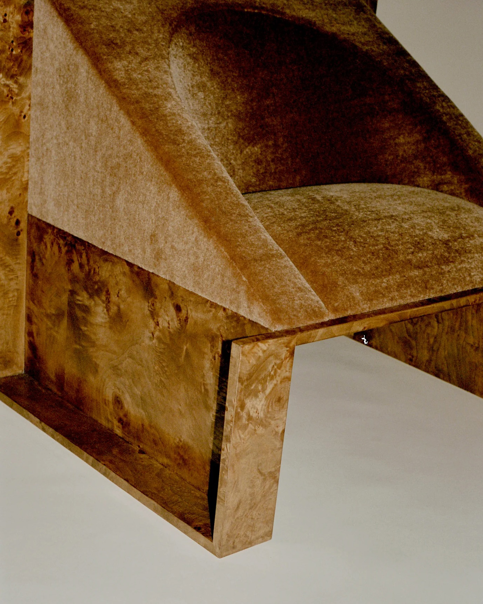
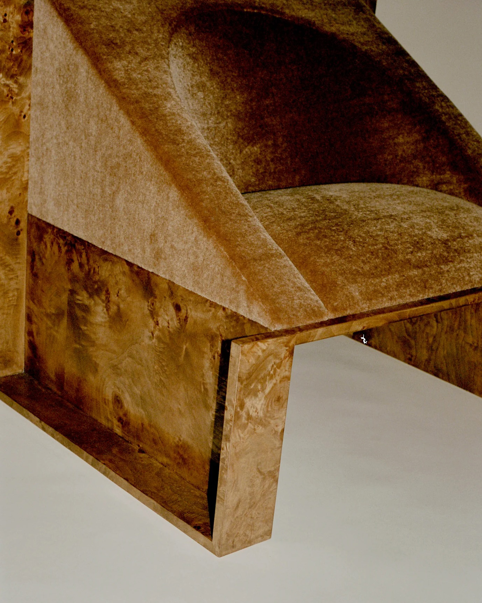

My Chair Warehouse
Perception Chair by Known Work

 


Perceptions Chair explores the relationship between upholstery and framework. Its soft, sculpted interior creates contours within the linear form. The symmetrical nature and gentle restraint celebrate the process of making and nod to minimalist values.
Perception Chair is designed by Known Work Studio. KW Studio is founded by Danu Kennedy and Jeremy Levitt, Known Work is an expressioin of their dedication to detaied craft, material intergrity, and fostering community at an intimate scale.